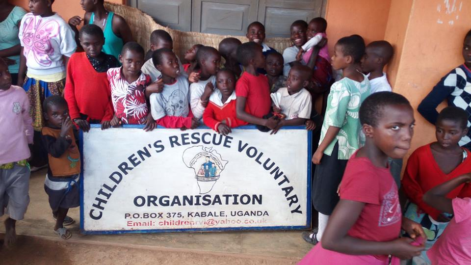
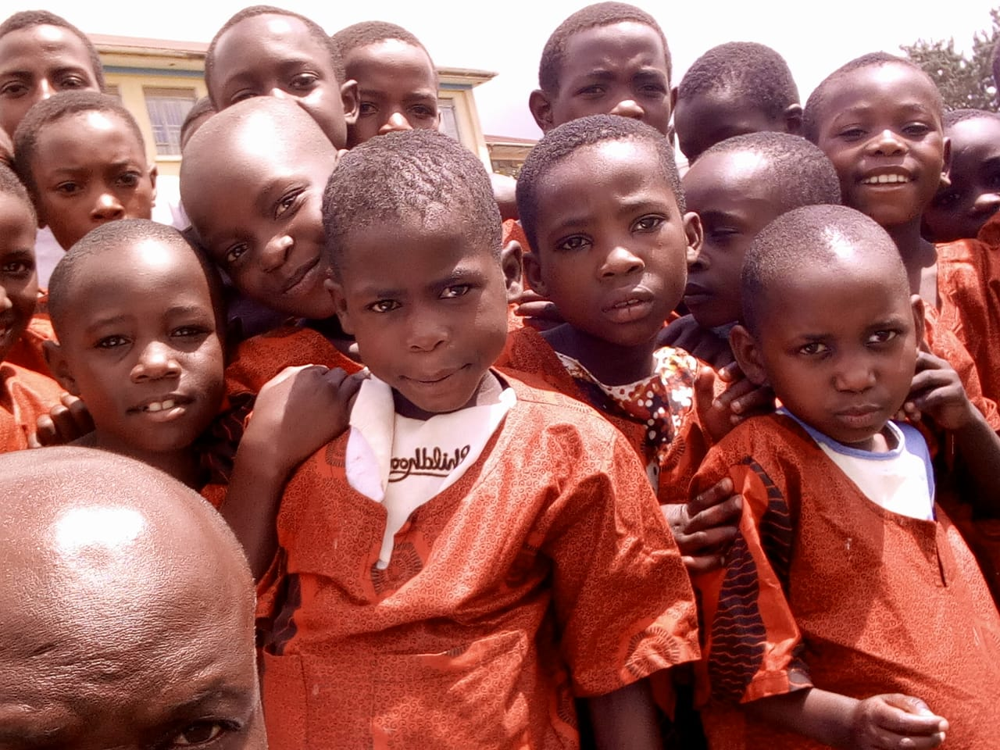
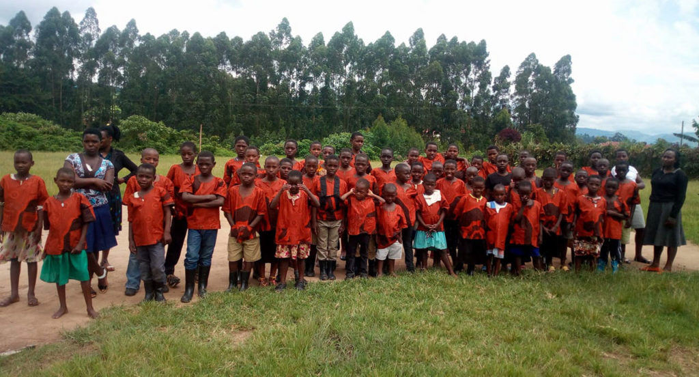
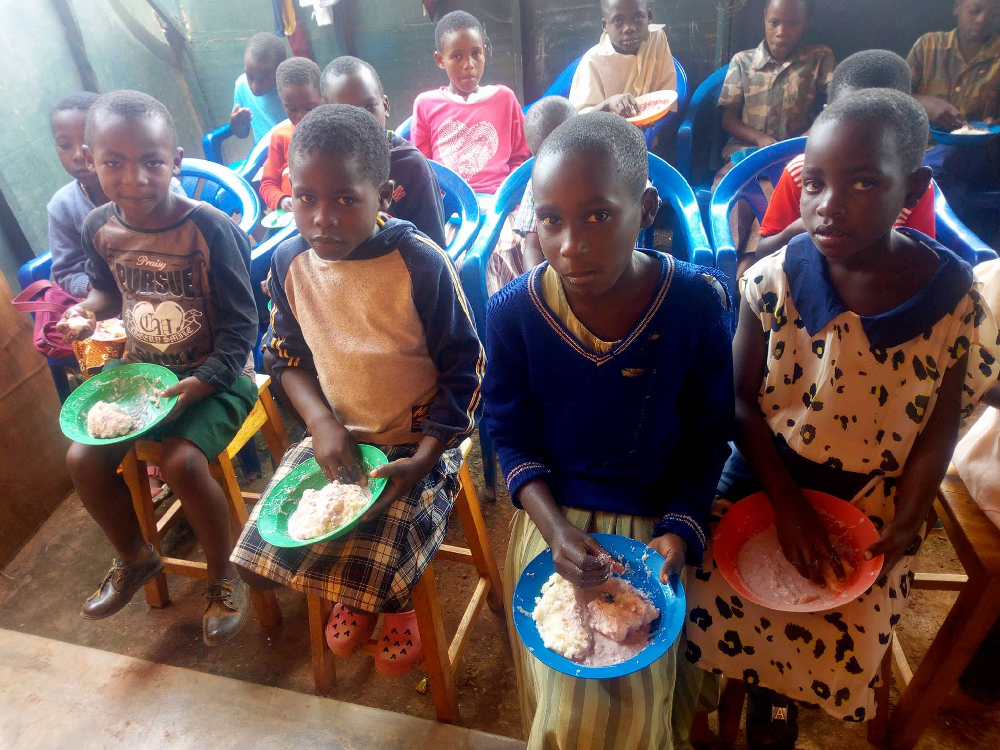

Children’s Rescue voluntary organization targets vulnerable children whose hope has been lost due to physical and socio-emotional tortures. Investment in social development provides opportunities to help tackle and mitigate the inequalities and imbalances that have adversely affected vulnerable children. It is disheartening seeing a child compete with animals in garbage centers for food.

Our hope and inspiration lies in the fact that each and every one is equally important and necessary hence need to take care and be touched by the plight of the vulnerable children.
Much is needed to reach these children. Our vision as an organization is committed to rehabilitate and restore the lost hope of vulnerable children so as to live their full potential and their rights and aspirations well fulfilled.
We are committed to ensuring that children enjoy in fullness life in its fullness like others. We need to stand up and join hands to help these innocent vulnerable children some of whom have resorted to being street children. Our encouragement to us all is to see these children as resourceful raw materials which at one point will become valuable finished goods for others to depend on.
Hope never runs dry.

OUR VISION:
To rehabilitate the psychologically tortured children through equipping them with knowledge and skills so as to live to their full potential and their rights and aspirations are fulfilled.
MISSION STATEMENT:
To restore the lost hope of marginalized children through providing basic essentials.
CORE VALUES:
Children’s rescue voluntary organization cherishes love, care and compassion for orphans and other vulnerable children.

STRATEGIC PLAN OBJECTIVES:
- Creation of an environment conducive for the survival, growth, development and participation of vulnerable children and households.
- To strengthen programs that seek to protect orphans and other vulnerable children and households at all levels.
- To enhance the capacity of households, communities and other implementing agents to deliver integrated and quality services for vulnerable children.
- To spearhead socio-economic transformation of the communities for sustainability through promotion of income generating activities at the household level.
TARGET GROUPS:
More than 2 million orphans are estimated to be in Uganda. Majority of these are paternal orphans who are living with their mothers whose health and wellbeing is paramount to the survival of orphans today.
However from a socio-economic point of view not all orphaned children are vulnerable if their extended families can absorb them nurture them and take care of their basic needs.
Vulnerability encompasses almost all children in Uganda. Vulnerable
children include an estimate of more than 20,000 street children living
in urban centers, poverty stricken children, children
from broken
marriages, domestic violence, children with disabilities as well as
those that are affected by child abuse, child labor, child trafficking
and defilement. Many of the households are unable to provide for
financial, social, psychological, educational and health needs for the
vulnerable children.

PRIORITY TARGETS:
The following are categories of vulnerable children who are targeted
under CRVO strategic plan; These are: child headed households, street
children, children affected by conflicts, children
with psychological or physical vulnerability, child laborers, single, widowed, female headed
households, older persons headed households, chronically ill headed households, or caregiver and
households with persons living with a disability.
REDUCING VULNERABILITY:
A special focus will be on the alleviation of poverty of vulnerable children and households ensuring children can access education, providing health care and support activities.
ENSURING THE PARTICIPATION OF VULNERABLE CHILDREN AND FAMILIES:
This will involve making orphans, other vulnerable children and their families part of the solution by seeking their opinions at every step during the planning, implementation, monitoring and evaluation.
GUIDING PRINCIPLES:
CRVO is committed to ensuring that everybody is equally important and necessary, families and communities will be encouraged to treat orphans and other vulnerable children with respect. They are not to be treated as helpless victims but as actors in their own right. They will be entitled to express their own views and have those views treated with respect.
CORE PROGRAMS:
The following are the core programs areas that have been selected for programming prioritization. These are considered to be key to improving quality of life of vulnerable children.
- Socio-economic security
- Food and nutrition
- Care and support
- Education
- Psychological support
- Health
- Child protection
- Legal protection
- Legal support
- Strengthening capacity and resource mobilization
Utilizing these core areas will generate measurable impact in the lives of vulnerable children and households.
FOUR BROAD CRITERIA FOR SELECTION OF VULNERABLE CHILDREN:
- Children Living On Their Own
- Poor/Potentially Poor
- Unstable Environment (Abusive, Conflicts)
- Orphaned Or Vulnerability
FOUR BROAD CRITERIA FOR SELECTION OF VULNERABLE CHILDREN AT THE HOUSEHOLD LEVEL.
- Single Widowed Caregiver
- Chronically Ill Adult In Home
- Female Caregiver or Head of Family /Elderly Caregiver
- Orphaned or Other Vulnerable Children
Definitions of the broad criteria for selection above
In need/impoverished:
- Inadequate food (one meal or none)
- Inadequate clothing (less than three including uniform)
- Lack or poor shelter
- Lack of education
- Regular cash income less than 2000 shs per day.
Orphan:
- Single maternal (mother known to be dead)
- Single paternal (father known to be dead)
- Double orphan (both parents known to be dead)
Other vulnerability:
- Abandoned (parents known to be alive or assumed but cannot be located)
- Parents/guardians cannot be located or are absent (parents are assumed dead or known to be missing and cannot be located)
- Chronically ill parents or child
- Illiterate /not going to school
- Disabilities
- Conflicts environment
PRIORITISATION:
In the process of formulating CRVO’s strategic plan, three areas are to take priority as below:
- Improving the socio-economic security of households in which orphans and other vulnerable children live.
- Investing in the improved education of orphans and other vulnerable children not only at primary level but through the secondary at a standard of quality that is accepted to government.
- Ensuring the health and psychosocial wellbeing of not only vulnerable children but also of their primary caregivers – their surviving mother and elderly mother.
SOCIO–ECONOMIC SECURITY:
Higher households income would allow households to provide adequate, nutritionally balanced food at
appropriate
intervals, provide adequate care and support. It will provide basic
needs and access to services for members of the households. Income
generating project improves the socio-economic situation of vulnerable
children which will offer the possibility of sustainable intervention that goes beyond immediate assistance.
EDUCATION:
Education is a fundamental right of every right and leads to greater future opportunities in
terms of productivity and improved socio-economic status.
Ensuring stay in school may allow psychosocial interventions to be more easily provided such as peer group formation and facilitation of mentoring partnerships and protection of certain rights of children by education for their rights.
HEALTH:
Focusing on the health of vulnerable children, particularly their nutritional status requires that food security and nutritional status of the households be maintained. Psychosocial support is also an integral part of all and wellbeing of vulnerable children.